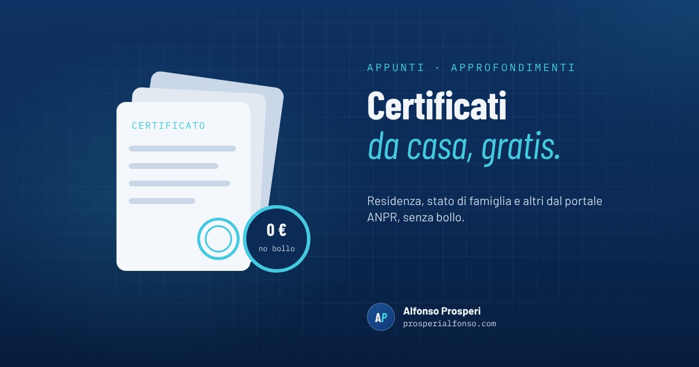

Per anni il certificato di residenza o lo stato di famiglia volevano dire una mattina persa all'anagrafe del Comune, più la marca da bollo. Oggi molti certificati si scaricano da casa, gratis, dal portale dell'Anagrafe Nazionale della Popolazione Residente (ANPR).
Cos'è l'ANPR
È la banca dati nazionale che ha preso il posto delle anagrafi dei singoli Comuni. Tutti i Comuni italiani sono collegati, e i dati sono gli stessi che vede l'impiegato allo sportello. Per questo il certificato scaricato online ha lo stesso valore di quello cartaceo.
Quali certificati puoi scaricare
Dal portale si possono ottenere i principali certificati anagrafici, per te o per un componente della tua famiglia anagrafica:
- residenza e residenza AIRE (per chi vive all'estero)
- stato di famiglia, anche con i rapporti di parentela
- stato civile, stato libero, cittadinanza, esistenza in vita
- nascita, matrimonio, unione civile e contratto di convivenza
Negli ultimi tempi si sono aggiunti anche alcuni certificati di stato civile, come nascita e matrimonio, nei Comuni che sono già passati all'archivio nazionale dello stato civile. Se il tuo non c'è ancora, per quei documenti serve ancora il Comune.
Quanto costa
Online i certificati sono gratuiti: niente marca da bollo e niente diritti di segreteria. Allo sportello, invece, il bollo si paga ancora nei casi previsti.
Come si fa
- Vai sul portale ANPR, nell'area per i cittadini.
- Accedi con SPID, CIE o CNS.
- Scegli Certificati, poi la persona (tu o un familiare) e il tipo di certificato.
- Controlla l'anteprima, indica l'uso o l'eventuale esenzione dal bollo e scarica il PDF, oppure fattelo mandare per email.
Non solo certificati
Dal portale ANPR puoi anche controllare i tuoi dati anagrafici e segnalare eventuali errori, e in molti Comuni puoi chiedere il cambio di residenza online. C'è poi una funzione per preparare un'autocertificazione già compilata con i tuoi dati.
Ricorda: spesso il certificato non serve
Uffici pubblici e gestori di servizi pubblici non possono chiederti certificati: devono accettare l'autocertificazione e controllare loro i dati. Il certificato serve soprattutto ai privati, per esempio banche, notai o assicurazioni, che possono chiederlo ma non sono obbligati ad accettare l'autocertificazione.
Anche altri documenti si stanno spostando sul telefono: ne ho parlato nell'articolo su IT-Wallet e l'app IO.